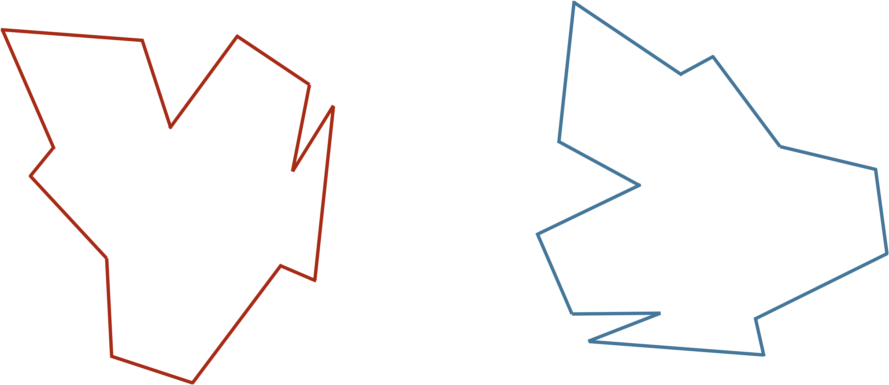
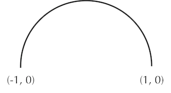
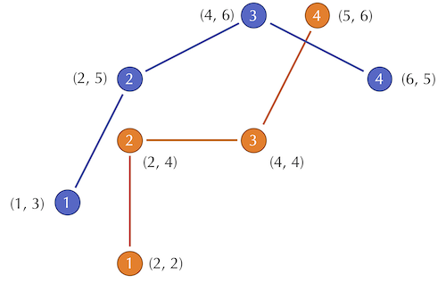
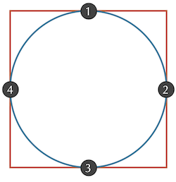

Comparing Protein Structures to Assess Model Accuracy
Experiments determine the structure of the SARS-CoV-2 spike protein
In the previous lesson, we saw how to predict the structure of a protein from its sequence and a database of known structures. We then used homology modeling to predict the structure of the SARS-CoV-2 spike protein using three different software resources. This mimics the work of many researchers in January 2020, which included the contributions of volunteers’ computers from around the world.
Meanwhile, other scientists were working on verifying the structure of the protein experimentally. On February 25, 2020, researchers from the Seattle Structural Genomics Center for Infectious Disease deposited the result of a cryo-EM experiment determining the structure of the spike protein to the PDB as entry 6vxx. If you would like to explore its shape a bit, check out the 3-D viewer for the protein at http://www.rcsb.org/3d-view/6VXX/1.
In this lesson, we will compare our predicted results from the previous lesson to the empirically validated structure of the SARS-CoV-2 spike protein. How well do our models approximate the real structure?
Comparing two shapes with the Kabsch algorithm
Ultimately, the problem of comparing protein structures is intrinsically similar to the comparison of two shapes, a problem that we will discuss first.
STOP: Consider the two shapes in the figure below. How similar are they?

Even if you think you have a good handle on comparing the above two shapes, it is because humans have very highly evolved eyes and brains that help us quickly cluster and classify the objects that we see in the world. Training a computer to see objects as well as we can is more difficult than you think!
Our goal is to develop a “distance function d(S, T) that takes two shapes S and T as input and that quantifies how different these shapes are. If the two shapes are the same, then the distance between them should be equal to zero; the more different the shapes, the larger d should become.
You may have noticed that the two shapes in the preceding figure are similar; in fact, they are the same. To demonstrate that this is true, we can first move the red shape to superimpose it over the blue shape, then flip the red shape, and finally rotate it so that its boundary coincides with the blue shape, as shown below.
 We can transform the red shape into the blue shape by translating it, flipping it, and then rotating it.
We can transform the red shape into the blue shape by translating it, flipping it, and then rotating it.
More generally, if S can be translated, flipped, and/or rotated to produce T, then S and T are the same shape, and so d(S, T) is equal to zero. The question is what d(S, T) should be if S and T are not the same shape.
Our idea for defining d(S, T) is first to translate, flip, and rotate S so that the resulting transformed shape resembles T “as much as possible”. We will then determine how different the resulting shapes are to determine d(S, T).
To this end, we first translate S to have the same centroid (or center of mass) as T. The centroid of S is found at the point (xS, yS) such that xS is the average of x-coordinates on the boundary of S and yS is the average of y-coordinates on the boundary.
For example, suppose S is the semicircular arc shown in the figure below, with endpoints (-1, 0) and (1, 0).
 A semicircular arc with radius 1 corresponding to a circle whose center is at the origin.
The x-coordinate xS of this shape’s centroid is clearly zero. But yS is a little trickier to compute and requires us to apply a little calculus, taking the average of the y-values along the entire circle:
\[\begin{align*} y_S & = \dfrac{\int_{0}^{\pi}{\sin{\theta}}}{\pi} \\ & = \dfrac{-\cos{\pi} + \cos{0}}{\pi} \\ & = \dfrac{2}{\pi} \end{align*}\]STOP: Say that we connect (-1, 0) and (0, 1) to form a closed semicircle. What will be the centroid of the resulting shape?
The centroid of some shapes, like the semicircular arc in the preceding example, can be determined mathematically. But for irregular shapes, we can estimate the centroid of S by sampling n points from the boundary of the shape and taking the point whose coordinates are the average of the x and y coordinates of points on the boundary.
Returning to our desire to compute d(S, T) for two arbitrary shapes, once we find the centroids of S and T, we translate S so that the two shapes have the same centroid. We then wish to find the rotation of S, possibly along with a flip as well, that makes the shape resemble T as much as possible.
Imagine first that we have found the desired rotation; we can then define d(S, T) in the following way. We sample n points along the boundary of each shape, converting S and T into vectors s = (s1, …, sn) and t = (t1, …, tn), where si is the i-th point on the boundary of S. We then compute the root mean square deviation (RMSD) between the two shapes, which is the square root of the average squared distance between corresponding points in the vectors.
\[\text{RMSD}(s, t) = \sqrt{\dfrac{1}{n} \cdot (d(s_1, t_1)^2 + d(s_2, t_2)^2 + \cdots + d(s_n, t_n)^2)}\]In this formula, d(si, ti) is the distance between the points si and ti in 2-D or 3-D space as the case may be.
Note: RMSD is a very commonly used approach across data science when measuring the differences between two vectors.
For an example RMSD calculation, consider the figure below, which shows two shapes with four points sampled from each.
 Two shapes with four points sampled from each.
The distances between corresponding points in this figure are equal to \(\sqrt{2}\), 1, 4, and \(\sqrt{2}\). As a result, we compute the RMSD as
\[\begin{align*} \text{RMSD}(s, t) & = \sqrt{\dfrac{1}{4} \cdot (\sqrt{2}^2 + 1^2 + 2^2 + \sqrt{2}^2)} \\ & = \sqrt{\dfrac{1}{4} \cdot 9}\\ & = \sqrt{\dfrac{9}{4}}\\ & = \dfrac{3}{2} \end{align*}\]STOP: Do you see any issues with using RMSD to compare two shapes?
Even if we assume that the shapes have already been overlapped and rotated appropriately, we still need to make sure that we sample enough points to give a good approximation of how different the shapes are. For an extreme example, consider a circle inscribed within a square, as shown in the figure below. If we happened to sample only the four points indicated, we would sample the same points in each shape, and conclude that the RMSD between these two shapes is zero. This issue is easily resolved by making sure to sample enough points to avoid approximation errors.
 A circle inscribed within a square. Sampling of the four points where the shapes intersect will give a flawed estimate of zero for RMSD.
However, all this has left open the fact that we assumed that we had rotated S to be as “similar” to T as possible. In practice, after superimposing S and T to have the same centroid, we will need to find the rotation of S that minimizes the RMSD between our vectorizations of S and T, and this resulting minimum will be what we define as d(S, T). It turns out that there is an approach to find this best rotation called the Kabsch algorithm, which requires some advanced linear algebra and is beyond the scope of our work but is described here.
Applying the Kabsch algorithm to protein structure comparison
The Kabsch algorithm offers a compelling way to determine the similarity of two protein structures. We can convert a protein containing n amino acids into a vector of length n by selecting a single representative point from each amino acid. To do so, scientists typically choose the alpha carbon, the amino acid’s centrally located carbon atom that lies on the peptide’s backbone; the position of this atom will already be present in the .pdb file for a given structure.
STOP: Can you think of example where a small difference between protein structures can cause a large inflation in RMSD score?
Unfortunately, no perfect metric for shape comparison exists. To see why the Kabsch algorithm can be flawed, consider the figure below showing two toy protein structures. The orange structure (S) is identical to the blue structure (T) except for the change in a single bond angle between the third and fourth amino acids. And yet this tiny change in the protein’s structure causes a significant increase in d(si, ti) for every i greater than 3, which inflates the RMSD.
 (Top) Two hypothetical protein structures that differ in only a single bond angle between the third and fourth amino acids, shown in red. Each circle represents an alpha carbon. (Bottom left) Overlaying the first three amino acids shows how much the change in the bond angle throws off the computation of RMSD by increasing the distances between corresponding alpha carbons. (Bottom right) The Kabsch algorithm would align the centers of gravity of the two structures in order to minimize RMSD between corresponding alpha carbons. This makes it difficult for the untrained observer to notice that the two proteins only really differ in a single bond angle.
(Top) Two hypothetical protein structures that differ in only a single bond angle between the third and fourth amino acids, shown in red. Each circle represents an alpha carbon. (Bottom left) Overlaying the first three amino acids shows how much the change in the bond angle throws off the computation of RMSD by increasing the distances between corresponding alpha carbons. (Bottom right) The Kabsch algorithm would align the centers of gravity of the two structures in order to minimize RMSD between corresponding alpha carbons. This makes it difficult for the untrained observer to notice that the two proteins only really differ in a single bond angle.
Another way in which the Kabsch algorithm can be fooled is in the case of a substructure that is appended to the side of a structure and that throws off the ordering of the amino acids. For example, consider the following toy example of a structure into which we incorporate a loop.
 A simplification of two protein structures, one of which includes a loop of three amino acids. After the loop, each amino acid in the orange structure will be compared against an amino acid that occurs farther long in the blue structure, thus increasing d(si, ti)2 for each such amino acid.
A simplification of two protein structures, one of which includes a loop of three amino acids. After the loop, each amino acid in the orange structure will be compared against an amino acid that occurs farther long in the blue structure, thus increasing d(si, ti)2 for each such amino acid.
Finally, it may be the case that one or more amino acids is inserted into or deleted from one of the proteins. This mutation would have a similar effect on RMSD as the above figure. For this reason, biologists will often align two genes first, ignoring any positions that do not have a corresponding amino acid in one of the two proteins. (We will see an example of a protein alignment soon when comparing the coronavirus spike proteins.)
In short, if the RMSD of two proteins is large, then we should be wary of concluding that the proteins are very different, and we may need to combine RMSD with other methods of structure comparison. But if the RMSD is small (e.g., just a few angstroms), then we can have some confidence that the proteins are indeed similar.
We are now ready to consider the following tutorial, in which we apply the Kabsch algorithm to compare the structures that we predicted for human hemoglobin subunit alpha and the SARS-CoV-2 spike protein against their experimentally validated structures.
Assessing the accuracy of our structure prediction models
In the tutorials occurring earlier in this module, we used publicly available protein structure prediction servers to predict the structure of human hemoglobin subunit alpha (using ab initio modeling) and the SARS-CoV-2 spike protein (using homology modeling).
Let’s see how well our models performed by showing the values of RMSD produced by the Kabsch algorithm when comparing each of these models against the validated structures.
Ab initio (QUARK) models of Human Hemoglobin Subunit Alpha
In the ab initio tutorial, we used QUARK to perform ab initio structure prediction of human hemoglobin subunit alpha from its amino acid sequence, producing five models. In the following table, we show the RMSD produced by the Kabsch algorithm for each of these models against the validated structure of this subunit (PDB: 1si4).
| Quark Model | RMSD |
|---|---|
| QUARK1 | 1.58 |
| QUARK2 | 2.0988 |
| QUARK3 | 3.11 |
| QUARK4 | 1.9343 |
| QUARK5 | 2.6495 |
It is tempting to conclude that our ab initio prediction was a success. However, because human hemoglobin subunit alpha is such a short protein (141 amino acids), researchers would consider this RMSD score high.
We know that homology modeling will be faster than ab initio modeling. But will it be more accurate as well?
Homology models of SARS-CoV-2 S protein
In the homology tutorial, we used SWISS-MODEL and Robetta to predict the structure of the SARS-CoV-2 spike protein, and we used GalaxyWeb to predict the structure of this protein’s receptor binding domain (RBD). In addition to our predicted models, we will also assess five predicted models of the full SARS-CoV-2 spike protein released early in the COVID-19 pandemic by Rosetta@Home and published to the Seattle Structural Genomics Center for Infectious Disease (SSGCID). Because the work needed to generate these models was distributed over many users’ machines, comparing the RMSD scores obtained by the Rosetta@Home models against our own may provide insights on the effect of computational power on the accuracy of predictions. The SSGCID models can be found here.
GalaxyWEB
First, we consider the GalaxyWEB models that we produced of the spike protein RBD. We compared these models to the validated SARS-CoV-2 RBD (PDB entry: 6lzg).
| GalaxyWEB | RMSD |
|---|---|
| Galaxy1 | 0.1775 |
| Galaxy2 | 0.1459 |
| Galaxy3 | 0.1526 |
| Galaxy4 | 0.1434 |
| Galaxy5 | 0.1202 |
All of these models have an excellent RMSD score and can be considered very accurate. Note that their RMSD is more than an order of magnitude lower than the RMSD computed for our ab initio model of hemoglobin subunit alpha, despite the fact that the RBD is longer (229 amino acids).
SWISS-MODEL
We now shift to homology models of the entire spike protein and start with SWISS-MODEL. We compared each model produced by SWISS-MODEL against the validated structure of the SARS-CoV-2 spike protein (PDB entry: 6vxx).
| SWISS MODEL | RMSD |
|---|---|
| SWISS1 | 5.8518 |
| SWISS2 | 11.3432 |
| SWISS3 | 11.3432 |
From the scores, we can see that model SWISS1 performed the best. Even though the RMSD score of 5.818 is significantly higher than what we saw for the GalaxyWEB prediction for the RBD, keep in mind that the spike protein is 1281 amino acids long, and so the sensitivity of RMSD to slight changes should give us confidence that our models are on the right track.
Robetta
Robetta produced five models of a single chain of the SARS-CoV-2 spike protein. As with the models produced by SWISS-MODEL, we compared each of them against the validated structure of the SARS-CoV-2 spike protein (PDB: 6vxx).
| Robetta | RMSD |
|---|---|
| Robetta1 | 3.1189 |
| Robetta2 | 3.7568 |
| Robetta3 | 2.9972 |
| Robetta4 | 2.5852 |
| Robetta5 | 12.0975 |
STOP: Which do you think performed more accurately on our predictions: SWISS-MODEL or Robetta?
Most of the Robetta models for a single chain beat the SWISS-Model predictions for the entire protein. This makes it difficult to say at the moment which resource has performed better.
SSGCID
As explained above, the SSGCID models of the S protein released by Rosetta@Home used large amounts of computational power. Therefore, we might expect to see RMSD scores lower than those of our models. Like before, we will compare the models to the validated structure of (PDB: 6vxx). This time, we will assess the accuracy of predictions of a single chain as well as of the entire spike protein.
| SSGCID | RMSD (Full Protein) | RMSD (Single Chain) |
|---|---|---|
| SSGCID1 | 3.505 | 2.7843 |
| SSGCID2 | 2.3274 | 2.107 |
| SSGCID3 | 2.12 | 1.866 |
| SSGCID4 | 2.0854 | 2.047 |
| SSGCID5 | 4.9636 | 4.6443 |
STOP: Consider the following three questions.
First, note that SSGCID3 modeled a single chain more accurately, but SSGCID4 modeled a more accurate full protein. What do you think might have caused this?
Second, why do you think that the full protein RMSD values are so close to the single chain values?
As we might expect due to their access to the resources of thousands of users’ computers, the SSGCID models outperform our SWISS-MODEL models. But it is also worth noting that their RMSD values are not as close to zero as we might expect, even with access to hundreds of contributors’ computational resources. Is protein structure prediction a hopeless problem?